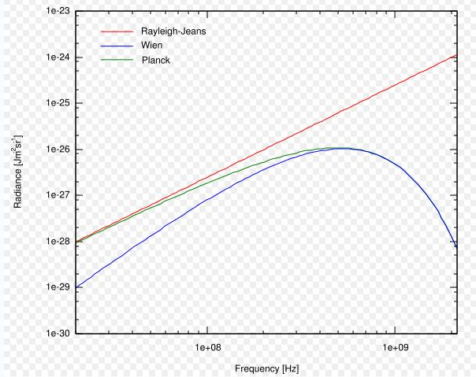

In this module, basic concepts of Black Body Radiation are explained.
An object radiates unique spectral radiant flux depending on the temperature of the object. This radiation is called Thermal Radiation because it mainly depends on temperature. Thermal radiation can be expressed terms of Black Body Theory.
In this experiment, the effect of temperature of the body on the wavelengths emitted by an object will be studied. The emitted wavelength is also used in remote sensing sensors to identify an object. For example, Forest fires are and lighted cities are detected at nights using this property by the DMSP OLS sensor.
- The black body is important in thermal radiation theory and practice.
- The ideal black body notion is importance in studying thermal radiation and electromagnetic radiation transfer in all wavelength bands.
- The black body is used as a standard with which the absorption of real bodies is compared.
Definition of a black body
A black body is an ideal body which allows the whole of the incident radiation to pass into itself (without reflecting the energy ) and absorbs within itself this whole incident radiation (without passing on the energy). This propety is valid for radiation corresponding to all wavelengths and to all angels of incidence. Therefore, the black body is an ideal absorber of incident radaition.
Roughly we can say that the stars radiate like blackbody radiators. This is important because it means that we can use the theory for blackbody radiators to infer things about stars.
At a particular temperature the black body would emit the maximum amount of energy possible for that temperature.
Blackbody radiation does not depend on the type of object emitting it. Entire spectrum of blackbody radiation depends on only one parameter, the temperature, T.

- The Rayleigh-Jeans Law.
- It agrees with experimental measurements for long wavelengths.
- It predicts an energy output that diverges towards infinity as wavelengths grow smaller.
- The failure has become known as the ultraviolet catastrophe
- Planck Law
We have two forms. As a function of wavelength.

And as a function of frequency
The Planck Law gives a distribution that peaks at a certain wavelength, the peak shifts to shorter wavelengths for higher temperatures, and the area under the curve grows rapidly with increasing temperature.
- Wein Displacement Law
- It tells us as we heat an object up, its color changes from red to orange to white hot.
- You can use this to calculate the temperature of stars.The surface temperature of the Sun is 5778 K, this temperature corresponds to a peak emission = 502 nm = about 5000 Å.
- b is a constant of proportionality, called Wien's displacement constant and equals 2.897 768 5(51) × 10–3 m K = 2.897768 5(51) × 106 nm K.

- The Stefan-Boltzmann Law
- Gives the total energy being emitted at all wavelengths by the blackbody (which is the area under the Planck Law curve).
- Explains the growth in the height of the curve as the temperature increases. Notice that this growth is very abrupt.
- Sigma = 5.67 * 10-8 J s-1 m-2 K-4, Known as the Stefan-Boltzmann constant.

Comparison of Rayleigh-Jeans law with Wien's law and Planck's law, for a body of 8 mK temperature 


- This applet plots Planck's Radiation Law curves for arbitrary temperatures in the range 3000-30,000 K, with the temperature for each case selected by the user with the slider at the bottom.
- Temperature can be selected by sliding the bar to the temperature desired and clicking New for each case to be plotted.
- There are two scales of slider movement: large moves by dragging the selector, and 1 degree at a time by clicking the space between the slider selector and slider ends.
- Clear button is used to clear the graph plot.

Q1. A blue colour star is...
hotter than white star
cooler than white star
at the same temperature as white star
at 0 K temperature
Q2. When the temperature of a black body is lowered to half its original value then the amount of heat radiated will be reduced to...
1/2
1/4
1/8
1/16
Q3. A plot of the continuous spectra of five different stars is shown in the figure below. Based on these spectra, which of the stars has the lowest temperature?
 Star A
Star A
Star B
Star C
Star D
Star E
Q4.At what wavelength would a star radiate the greatest amount of energy if the star has a surface temperature of 60,000 K?
50 nm
500 nm
300 nm
1.8 X 1011 nm
180 nm

Procedure for the experiment is as follows. ___________________________________________________________________________________________________________________________________________